Top 10 Power BI Dashboard Examples for 2026
Discover How You Build Your Own
Data visualization is key to effective analysis, and Microsoft Power BI excels with its customizable visualizations and user-friendly interface. As part of the Microsoft Power Platform, it integrates seamlessly with other Microsoft tools. It allows users to create visually appealing Power BI dashboards that highlight key performance indicators (KPIs) and support better decision-making.
Power BI is a platform useful for data visualization and reporting. It is designed and used by both business analysts and newer users, making it accessible to a wide range of people.

What is a Power BI Dashboard?
from financial performance and business growth to conversion rates.
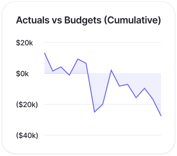
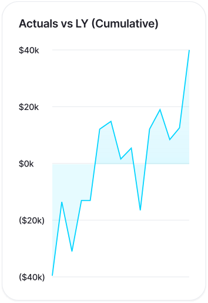
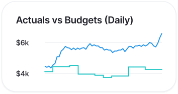
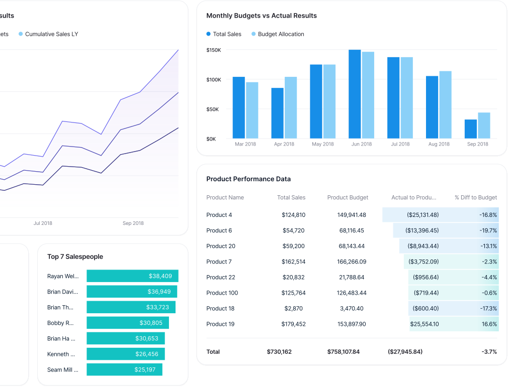
Why Use Power BI
Dashboards?
Dashboards are dynamic and interactive, with real-time refreshing tiles that keep your insights current.
This ensures you're always ready to make informed decisions based on the latest data.Abstract background with a diagonal split between light blue and dark navy blue colors
Who Can Create Power BI Dashboard?
Creating a Power BI dashboard is a feature reserved for users with edit permissions on the report.
These permissions are granted to the report creators and any colleagues they designate. For example, if a report is created in workspace ABC and you are added as a member, you both have editing capabilities.
Can edit reports and create dashboards if they have been added as members to a workspace (e.g., Workspace ABC).
Cannot create dashboards or pin tiles. Access is limited to viewing shared reports or Power BI apps.
Can create dashboards in shared workspaces.
Can create dashboards without needing a Pro or PPU license, offering flexibility for independent work.

Enhance the Distribution of Your BI Dashboards with The Reporting Hub
This is where The Reporting Hub comes into play. After working as analytics consultants and BI developers for many years, we created a Microsoft-endorsed no-code solution that simplifies how you share your Power BI content.
Power BI Dashboard vs Report: What is the Difference?
Power BI Dashboard Examples
From these Power BI dashboard examples, you will understand design ideas, visualize data effectively, and build better actionable insights.
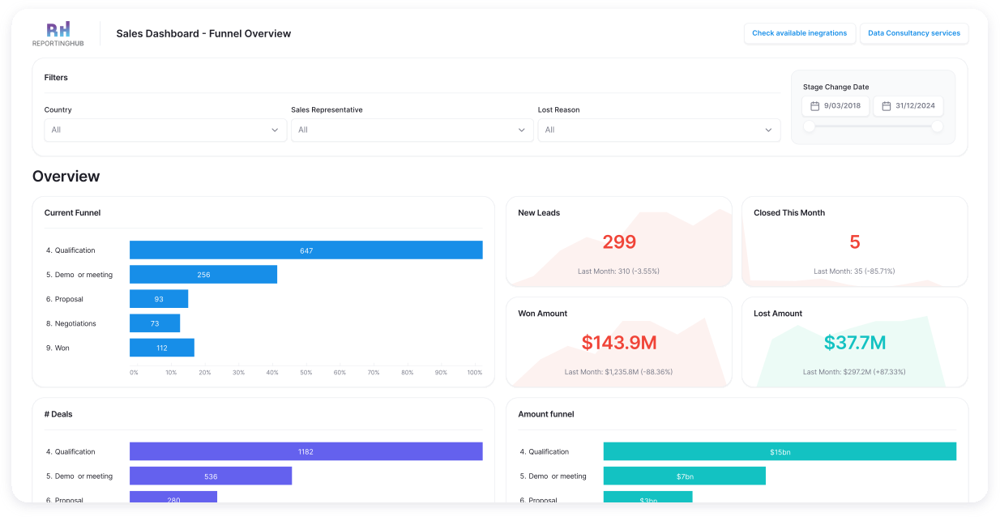
Interactive funnel charts show how leads convert into deals, with filters allowing analysis by country, sales representative, and reasons for lost deals.
Marketing Campaign Dashboard
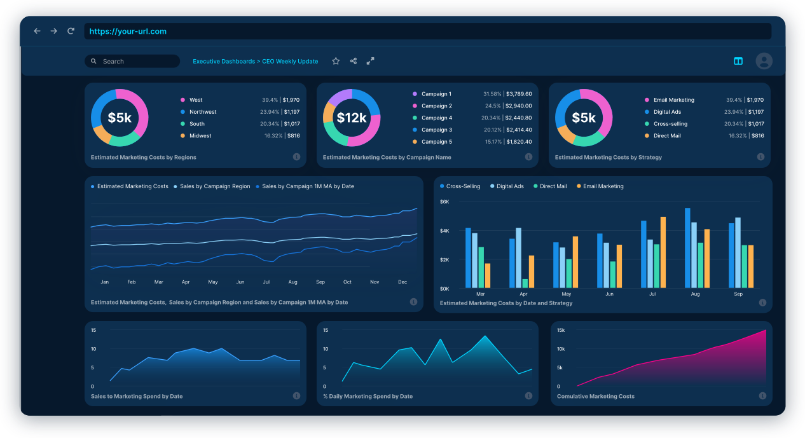
Financial Analysis Dashboard
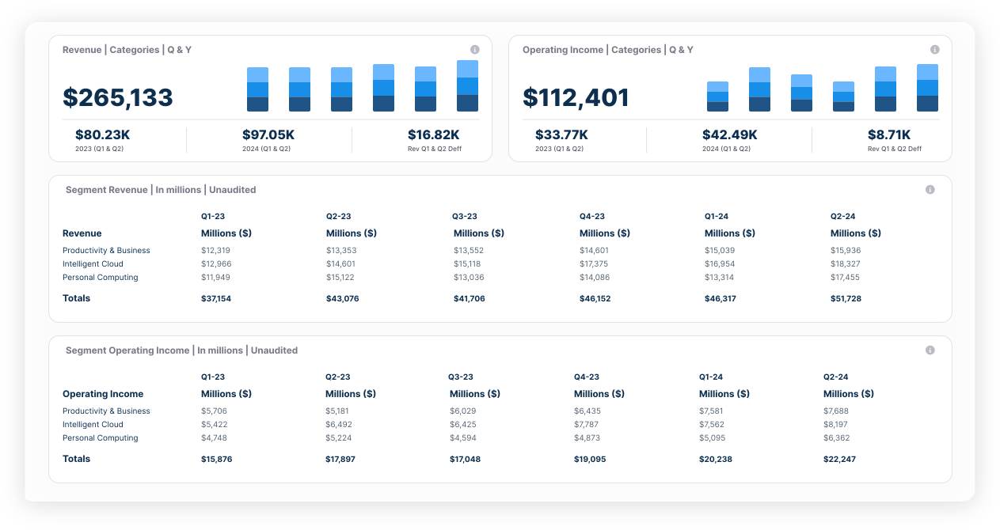
This Power BI dashboard turns financial data into powerful insights for informed decision-making.
Customer Insights Dashboard

Supply Chain Dashboard
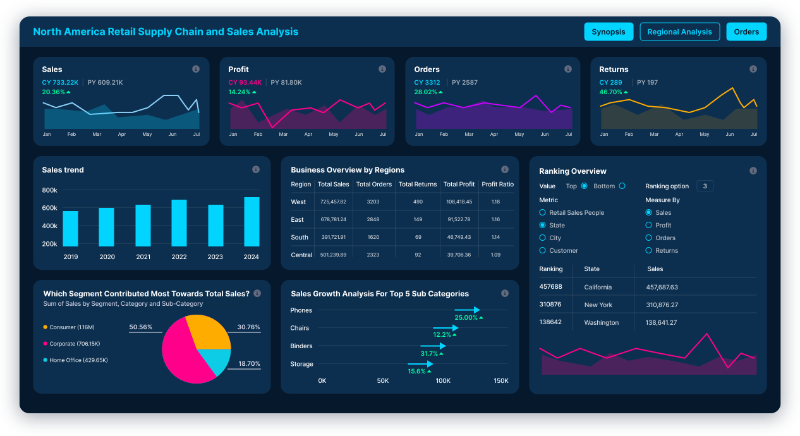
HR Analytics Dashboard
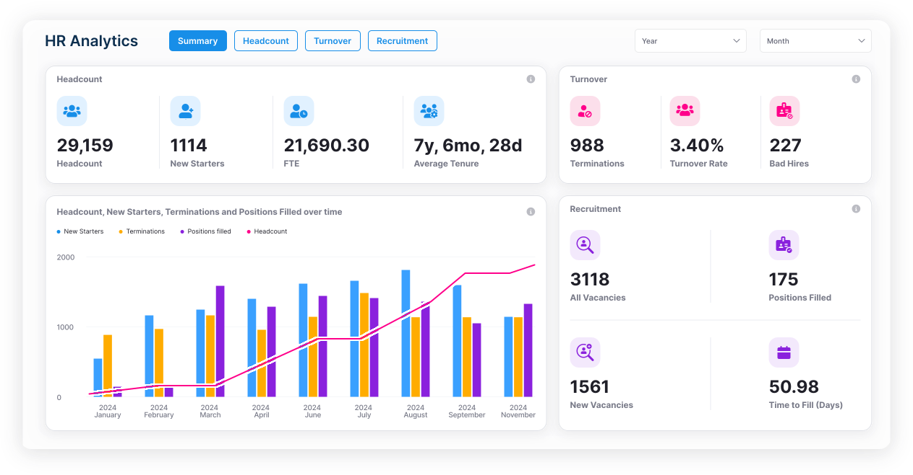
Product Performance Dashboard
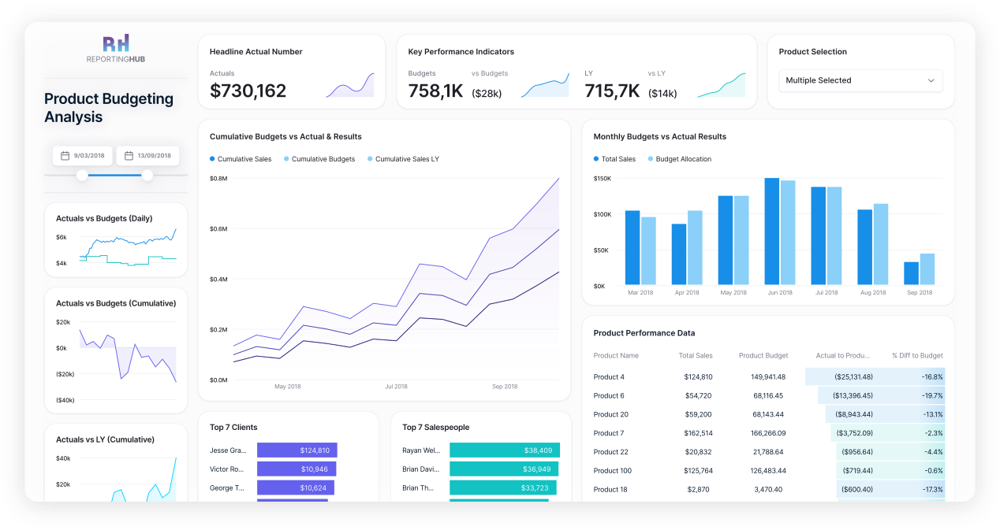
Operational Efficiency Dashboard
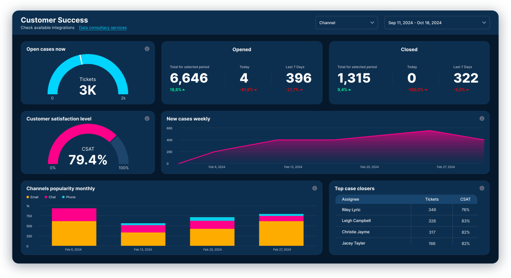
It tracks open cases, popular support channels, and team member performance, ensuring the team and stakeholders stay aligned.
Healthcare Analytics Dashboard
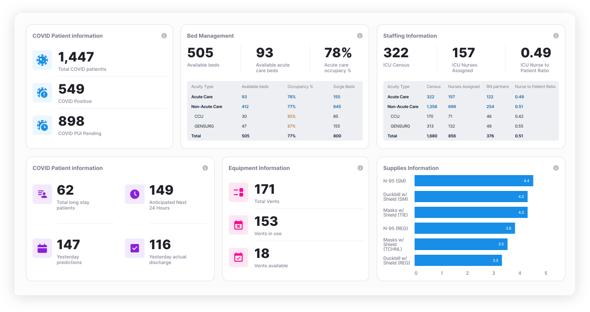
Risk Management Dashboard
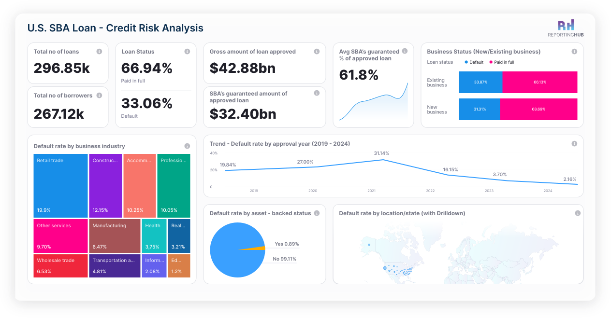
How to Create a Dashboard in Power BI?
Tips for Crafting Interactive Dashboards
Optimizing Power BI Dashboards for Performance
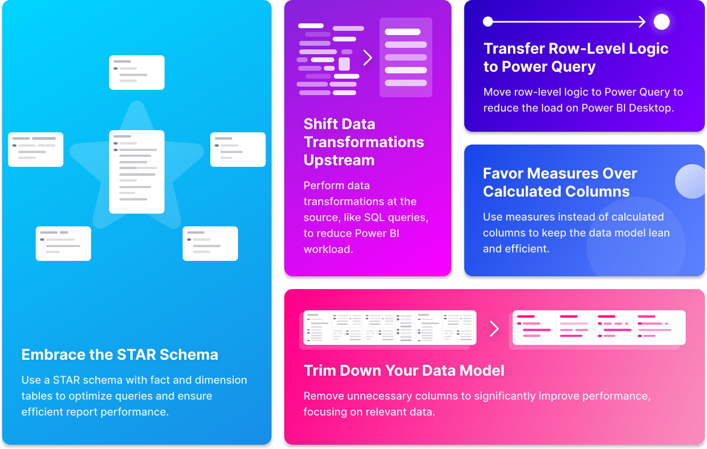